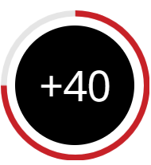

Conheça nossos serviços
Conheça nossa academia!
| Musculação | Fisioterpia | Yoga |
|---|---|---|
| A musculação é uma modalidade de treinamento físico realizado contra resistência de pesos externos, chamada também de treino resistido, que tem como objetivo o aumento hipertrofia muscular, ganho de força e potência. É uma atividade de duração instantânea e elevada intensidade. | É a ciência que estuda, diagnostica, previne e recupera pacientes com distúrbios cinéticos funcionais intercorrentes em órgãos e sistemas do corpo humano. O objetivo desta área é preservar, manter, desenvolver ou restaurar (reabilitação) a integridade de órgãos, sistemas ou funções. Utiliza-se de conhecimento e recursos próprios como parte do processo terapêutico nas condições psico-físico-social para promover melhoria de qualidade de vida. | Se você acha que yoga é apenas torcer e movimentar o corpo de forma esquisita, está na hora de repensar. Yoga é muito mais do que posturas. Yoga é um conjunto de conhecimentos de mais de 5 mil anos. Yoga é harmonizar o corpo com a mente e a respiração, através de técnicas de respiração (pranayamas), posturas de yoga (ásanas) e meditação. |
| Bike | CrossFit | Zumba |
| O ciclismo indoor é uma atividade de alta intensidade que ajuda nosso corpo a queimar gordura rapidamente, melhora a saúde do coração e aumenta a resistência muscular. É um exercício muito forte para as pernas. No final de cada treino, a produção de endorfina é alta e a sensação de bem-estar é inevitável.. | CrossFit é um programa de treinamento de força e condicionamento geral que proporciona a mais ampla adaptação fisiológica possível para qualquer tipo de pessoa, independente de idade ou nível físico, gerando assim uma maior otimização de todas as capacidades físicas; são elas: resistência cardiorrespiratória, resistência muscular, força, flexibilidade, potência, velocidade, coordenação, agilidade, equilíbrio e precisão. | Zumba é um exercício físico aeróbico baseado em movimentos de danças latinas, como o merengue, a cumbia, a salsa, o reggaeton, entre outros. As coreografias são fáceis para que todos consigam acompanhar o ritmo, mesmo aquelas pessoas que nunca foram a rainha do gingado. E o melhor: você malha o corpo todo sem perceber a hora passar. |
| Circo Infantil | Ginástica Artística | Acrobacia Aérea |
 |
 |
|
| A modalidade tem como objetivo preparar o corpo dos alunos para as demais atividades circenses. Utilizam-se colchões, plintos, tábuas de impulsão e mini-tramp. Consiste na execução de acrobacias, que são movimentos ginásticos rápidos e técnicos que exigem muito condicionamento físico, força, destreza, impulsão e concentração. Trabalham-se todos os grandes grupos musculares. | É uma modalidade esportiva que envolve um conjunto de movimentos. Esses movimentos exigem precisão, força, flexibilidade, agilidade, coordenação e equilíbrio. Portanto, o domínio do corpo é uma das principais características desses atletas. | Aparelho aéreo que tem como característica o trabalho simultâneo dos membros superiores e inferiores. Consiste em pendurar-se, enrolar-se no tecido e realizar quedas, posições invertidas ou posturas estáticas. Esse número trabalha todos os grupos musculares, com ênfase nos membros superiores e costas. Melhora a flexibilidade, a agilidade, a resistência e a força dos membros superiores. |
Os números não metem!!
Aulas por semana em vários horários

Aulas por semana em vários horários
